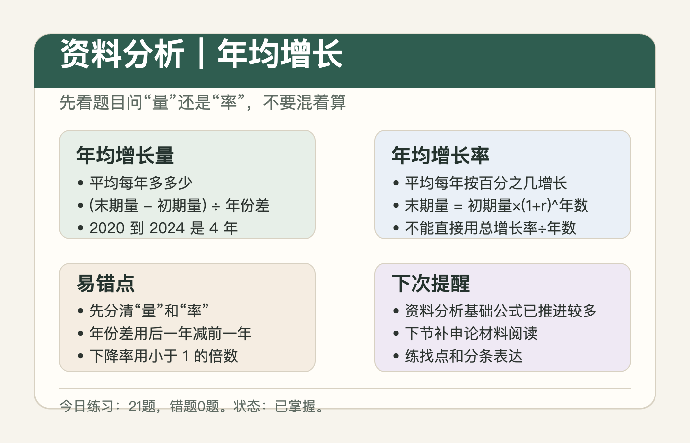
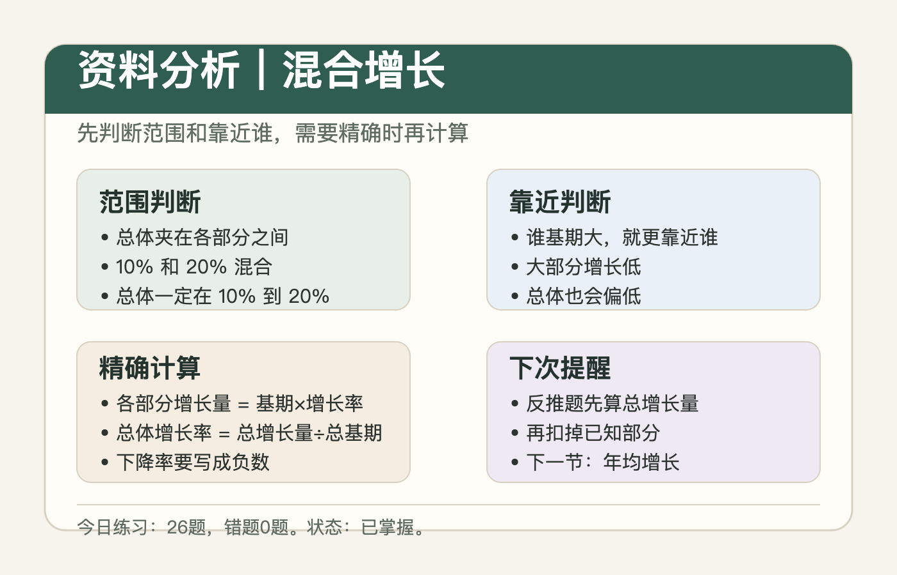
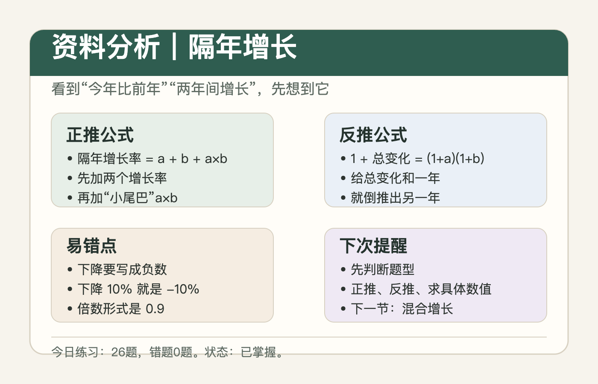

方案 A：清爽文档站
适合系统复习年均增长
先判断题目问的是“平均每年多多少”，还是“平均每年按百分之几增长”。 这一步看错，后面公式就会全错。
学习状态
已掌握。最近一次练习 21 题，错题 0 题。
下次提醒
进入综合分析或速算与估算，同时补一节申论材料阅读。
核心公式
年均增长量 = (末期量 - 初期量) ÷ 年份差
末期量 = 初期量 × (1 + 年均增长率)^年数
末期量 = 初期量 × (1 + 年均增长率)^年数
常见问法
- 问“年均增加多少”：用年均增长量。
- 问“年均增长率”：用倍数关系估算。
- 出现下降时，先把增长率写成负数。
知识卡片


